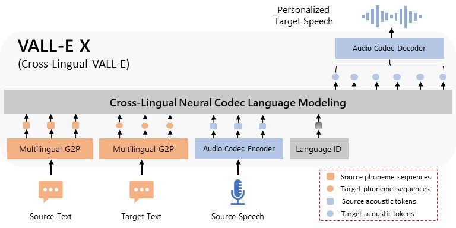

Demo of reproduced VALL-E X
Original description from Microsoft
VALL-E X can synthesize personalized speech in another language for a monolingual speaker. Taking the phoneme sequences derived from the source and target text, and the source acoustic tokens derived from an audio codec model as prompts, VALL-E X is able to produce the acoustic tokens in the target language, which can be then decompressed to the target speech waveform. Thanks to its powerful in-context learning capabilities, VALL-E X does not require cross-lingual speech data of the same speakers for training and can perform various zero-shot cross-lingual speech generation tasks, such as cross-lingual text-to-speech synthesis and speech-to-speech translation.
Additional description for reproduced model
| Data used for training | English | Chinese | Japanese |
|---|---|---|---|
| Microsoft's | LibriLight (70k+ hours) | Wenet Speech (10k+ hours) | - |
| Ours (reproduced) | LibriTTS + self-gathered (704 hours) | Aishell 1, 3, Aidatatang + self-gathered (598 hours) | JP commonvoice + self-gathered (437 hours) |
Unlike Microsoft's original model, the reproduced version does not contain the Speech-to-speech translation (S2ST) module (it requires additional training), but this functionality can be achieved by using Google Translate API.
VALL-E paper: Neural Codec Language Models are Zero-Shot Text to Speech Synthesizers
VALL-E X paper: Speak Foreign Languages with Your Own Voice: Cross-Lingual Neural Codec Language Modeling
official demo page: https://www.microsoft.com/en-us/research/project/vall-e-x/vall-e/
UI & API for usage: https://github.com/Plachtaa/vallex-webui
Training code from: https://github.com/lifeiteng/vall-e
This page is for showing reproduced results only.
Model Overview

VALL-E X can synthesize personalized speech in another language for a monolingual speaker. Taking the phoneme sequences derived from the source and target text, and the source acoustic tokens derived from an audio codec model as prompts, VALL-E X is able to produce the acoustic tokens in the target language, which can be then decompressed to the target speech waveform. Thanks to its powerful in-context learning capabilities, VALL-E X does not require cross-lingual speech data of the same speakers for training and can perform various zero-shot cross-lingual speech generation tasks, such as cross-lingual text-to-speech synthesis and speech-to-speech translation.
LibriSpeech Samples
| Text | Speaker Prompt | Ground Truth | MS's VALL-E | reproduced VALL-E X |
|---|---|---|---|---|
| They moved thereafter cautiously about the hut groping before and about them to find something to show that Warrenton had fulfilled his mission. | ||||
| And lay me down in thy cold bed and leave my shining lot. | ||||
| Number ten, fresh nelly is waiting on you, good night husband. | ||||
| Yea, his honourable worship is within, but he hath a godly minister or two with him, and likewise a leech. |
VCTK Samples
| Text | Speaker Prompt | Ground Truth | MS's VALL-E | reproduced VALL-E X |
|---|---|---|---|---|
| We have to reduce the number of plastic bags. | ||||
| So what is the campaign about? | ||||
| My life has changed a lot. | ||||
| Nothing is yet confirmed. |
Acoustic Environment Maintenance
VALL-E can synthesize personalized speech while maintaining the acoustic environment of the speaker prompt. The audio and transcriptions are sampled from the Fisher dataset.
| Text | Speaker Prompt | Ground Truth | MS's VALL-E | reproduced VALL-E X |
|---|---|---|---|---|
| I think it's like you know um more convenient too. | ||||
| Um we have to pay have this security fee just in case she would damage something but um. | ||||
| Everything is run by computer but you got to know how to think before you can do a computer. | ||||
| As friends thing I definitely I've got more male friends. |
Speaker’s Emotion Maintenance
VALL-E can synthesize personalized speech while maintaining the emotion in the speaker prompt. The audio prompts are sampled from the Emotional Voices Database.
| Text | Speaker Prompt | Ground Truth | MS's VALL-E | reproduced VALL-E X |
|---|---|---|---|---|
| We have to reduce the number of plastic bags. | Anger | |||
| Sleepy | ||||
| Neutral | ||||
| Amused | ||||
| Disgusted |
Ethics Statement
To avoid abuse, Well-trained models and services will not be provided.